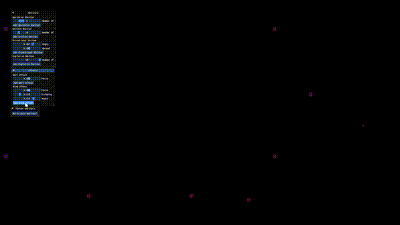
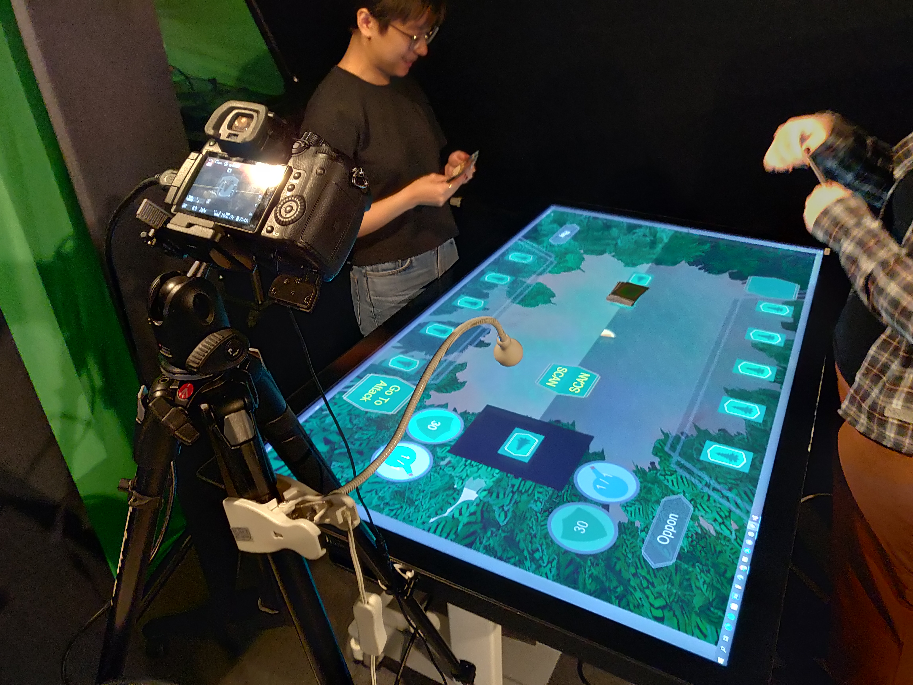
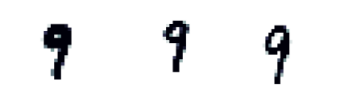
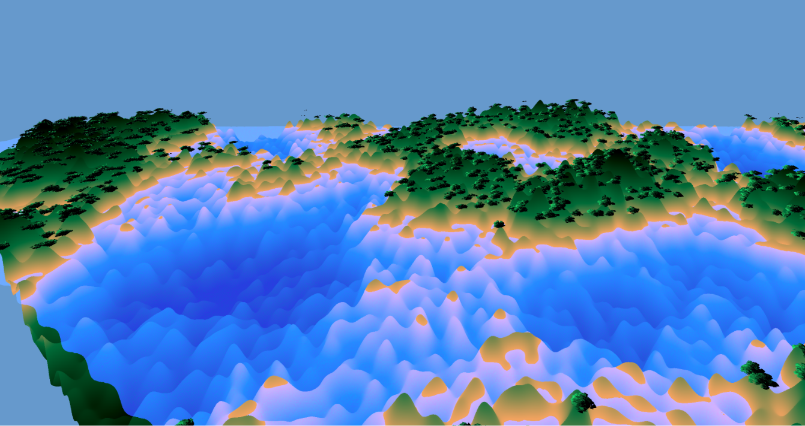
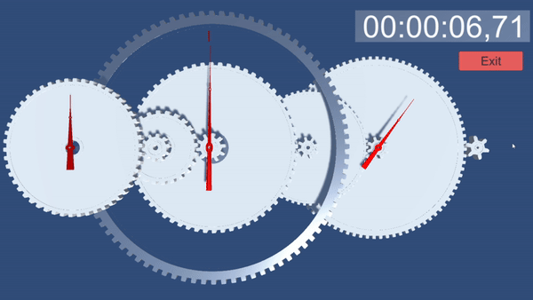

Hello!
I am a student doing my masters degree in Media technology and Engineering at Linköping university,
with a deep passion for all things media such as video games and movies and the technology that creates them.
I keep myself up to date of the latest advancements in most technology, and love to engage with the latest industry news through discussions and exploring their possible applications.
Currently, I am starting my transition into the next chapter of my life,
scouting for work experience where I can apply the skills that I've learnt during my studies in a professional setting, and create social connections along the way.
Projects
A brief portfolio of some of the projects I've done during my recent years, varying in scope.
MechaHive
A full game developed for the course TDDD23. This game was also submitted to the Liu Game Awards, where it reached the finals. Developed in Unity using C#
Data visualization User Interface
A user interface for visualization of different data sets such as temperature and pressure over Norrköping city, developed using JS and Cecium.

Particlesystem
A lab was to create a particle system, in which there was an emphasis on the structure of the application, so that it would be customizable and usable as an actual tool. This was developed in a group in C++.
Physi-Digital card game
As part of my bachelors group project we developed a card game, ment to be played both physically and digitally. The game featured physical cards, played on a large touch screen used as a table, which had the interface displayed. Players interacted with the game touching buttons, and playing cards which were scanned by a camera to allow the software to know which cards were being played, using image recognition. Developed in Unity using C#.
Navier stokes simulation
Fluids can be faked in many ways, here its fully simulated using Navier stokes equation with a fluid and a container represented by level set objects. Developed in C++.

Crowd simulation
A group project for the course TNM085, a offline render tech demo for inverse kinematics, ragdolling and large crowds. Project was developed partially in Houdini and 3DS Max using CAT.
Classification of handwritten numbers
Training data of handwritten numbers such as the ones on the image below was used to classify test data, using different methods. This was done as part of a lab in the course TNA005, in which the different methods used was evaluated and compared in Matlab.
Procedurally generated terrain
Procedurally generated terrain, with procedurally generated trees, creating an archipelago. The mesh for the terrain was generated using noise and the trees were generated by a fractal method using recursion. The water is also animated with kernel waves, which was done in fragment shaders. Developed in C.
Physical Clock simulation
An accurate model of the inner workings of a physical clock. A lot of precomputation had to be made to accurately get the ratios between the cogs, which was done in Matlab. Visualization was done in Unity.
React widgets
Widgets created in Android Studio for phones, created as default tools for apps or webpages using React. Showcased below is a carousel widget and a shopping cart widget, being used together.
Contact
E-mail: Lucas Jonsson